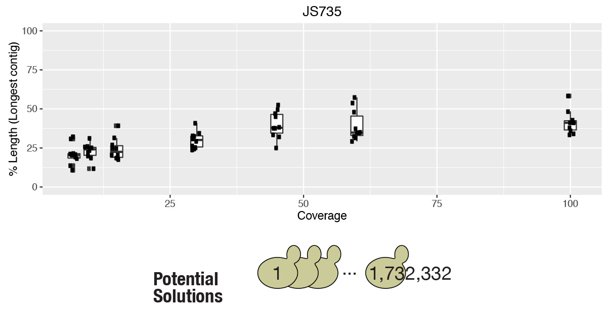

Sc2.0 genomiXploration
Follow along on 
bit.ly/2dL9OJU

Ongoing Sc2.0 projects
- What are the sequences of SCRaMbLEd genomes? Andreas
- How does a neochromosome affect tRNA levels? Daniel
- How does SCRaMbLEing affect transcript isoforms? ¯\_(ツ)_/¯
What are the final sequences of SCRaMbLEd genomes?

Start easy: SCRaMbLE strains derived from SynIXR parent
Short reads cannot always reassemble SCRaMbLEd genomes

Can increase chance of solving structure by increasing coverage
Coverage trick doesn't always work for more complicated genomes
Longer reads can help us get there...

Playing the long read lottery? Can we rig it??
We're in for a challenge...
How is tRNA expression affected by relocation to neochromosome?
tRNA neochr features
- All 275 tRNA genes to be moved
- Flanking sequences from non-S. cerevisiae strains
- Rox sites for independent genome SCRaMbLEing
- 183 tRNAs currently integrated
Three challenges for quantifying tRNAs
- tRNAs are highly structured DM-tRNA-seq
- tRNAs are heavily modified ARMseq
- tRNAs have multiple genomic origins pre vs mature tRNAs